토마토인데 왜 토마토
"사과가 되지 말고 도마도가 되라"
사과처럼 겉만 붉고 속은 흰 사람이 되지 말고 토마토처럼 겉과 속이 같은 견실한 사람이 되라는 말.토마토 종류
전체 보기 >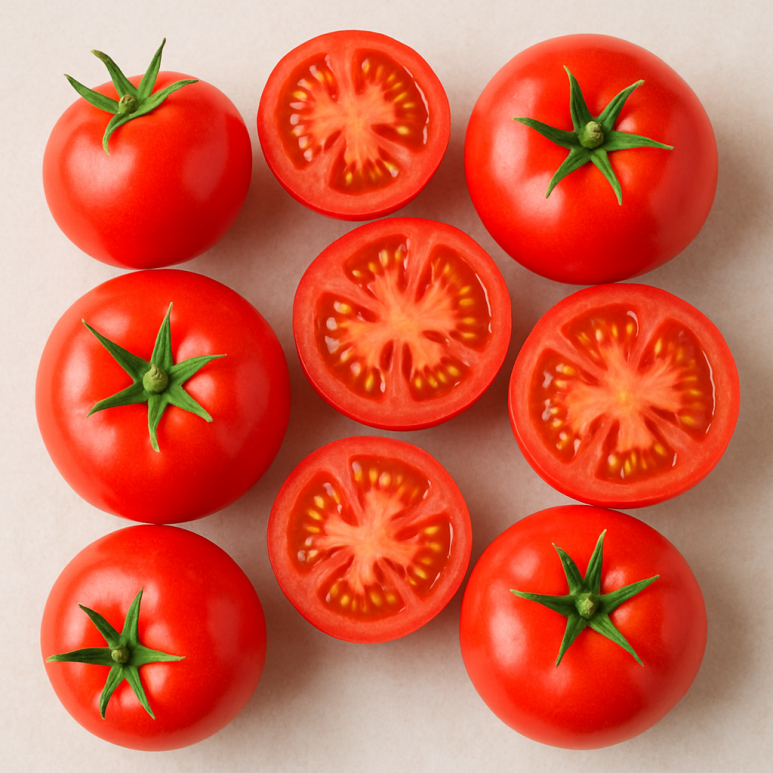
토마토
가장 기본이 되는 토마토
토마토
크기: 중간~큼
맛: 단맛과 산미 균형
식감: 부드러움
특징: 가장 흔한 토마토
활용: 샐러드, 요리
칼로리: 18kcal
당류: 2.6g
라이코펜: 풍부
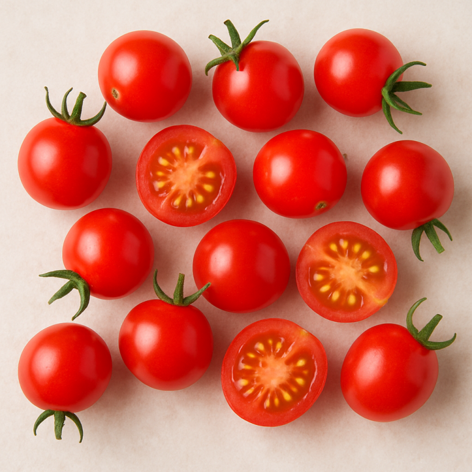
방울토마토
한입에 먹기 좋은 간식
방울토마토
크기: 작음
맛: 달콤함
식감: 탱글함
특징: 간식용 인기
활용: 간식, 도시락
칼로리: 20kcal
당류: 3.5g
비타민C: 풍부
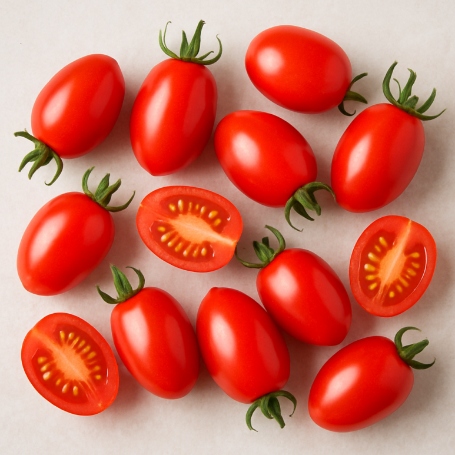
대추토마토
당도가 높은 토마토
대추토마토
크기: 작고 길쭉
맛: 진한 단맛
식감: 쫀득함
특징: 당도 높음
활용: 샐러드
칼로리: 22kcal
당류: 4.0g
당도: 높음
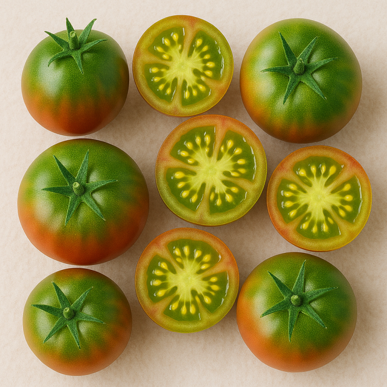
대저 짭짤이 토마토
짭짤한 단맛
대저 짭짤이 토마토
크기: 중간
맛: 짭짤하고 달콤함
식감: 부드러움
특징: 부산 대저 특산
활용: 생식
칼로리: 18kcal
당류: 2.8g
미네랄: 풍부
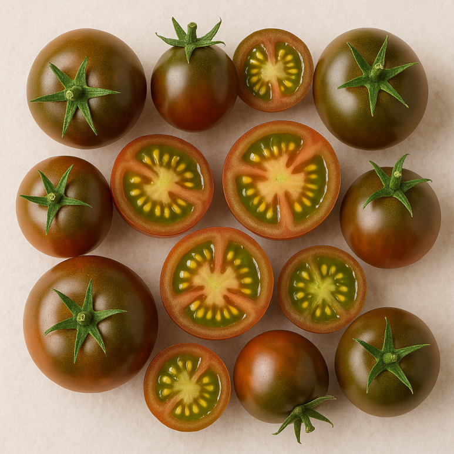
흑토마토
풍미가 깊은 토마토
흑토마토
크기: 중간
맛: 깊은 단맛
식감: 부드러움
특징: 프리미엄 느낌
활용: 샐러드
칼로리: 19kcal
당류: 2.7g
항산화: 높음
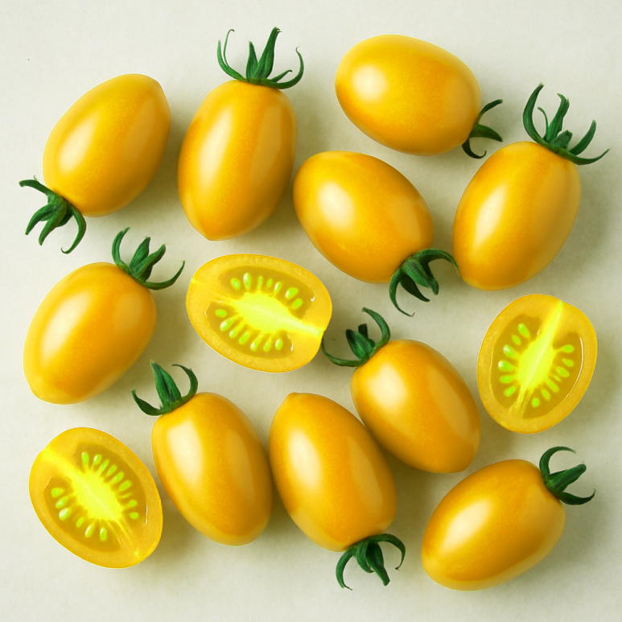
노란토마토
색감이 매력적인 토마토
노란토마토
크기: 다양
맛: 부드러운 단맛
식감: 부드러움
특징: 색이 예쁨
활용: 샐러드, 장식
칼로리: 17kcal
당류: 2.5g
베타카로틴: 풍부
토마토의 매력
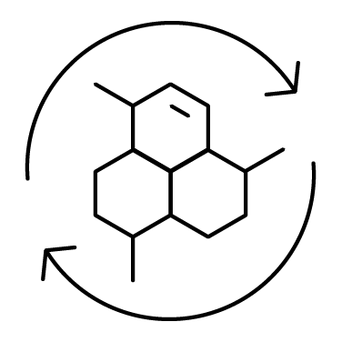
토마토의 라이코펜이 활성산소를 줄여줘 세포 손상을 막고 노화 예방에 도움을 줍니다.
비타민 C가 콜라겐 생성을 도와 피부를 탄력 있고 건강하게 유지하는 데 도움이 됩니다.
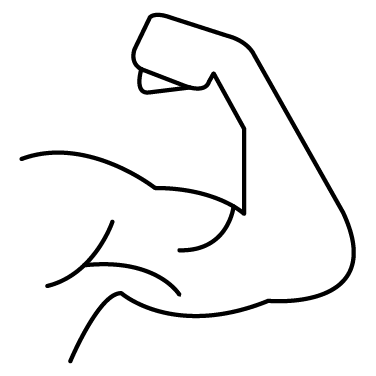
라이코펜과 칼륨이 혈압을 안정시키고 혈관 건강을 지키는 데 도움을 줄 수 있어요.
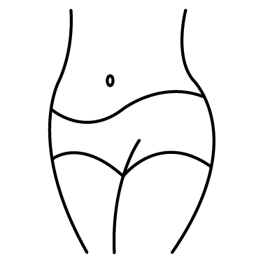
칼로리가 낮고 수분이 많아 포만감을 주기 때문에 다이어트 식단에 부담 없이 활용하기 좋습니다.
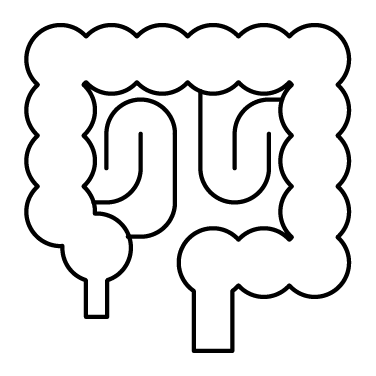
식이섬유가 장 운동을 도와 변비 예방과 장 건강에 도움을 줍니다.
비타민 A와 루테인이 풍부해 눈의 피로를 줄이고 시력 보호에 도움을 줍니다.
비타민 C와 항산화 성분이 면역력을 높이고 몸의 방어력을 강화하는 데 도움을 줍니다.


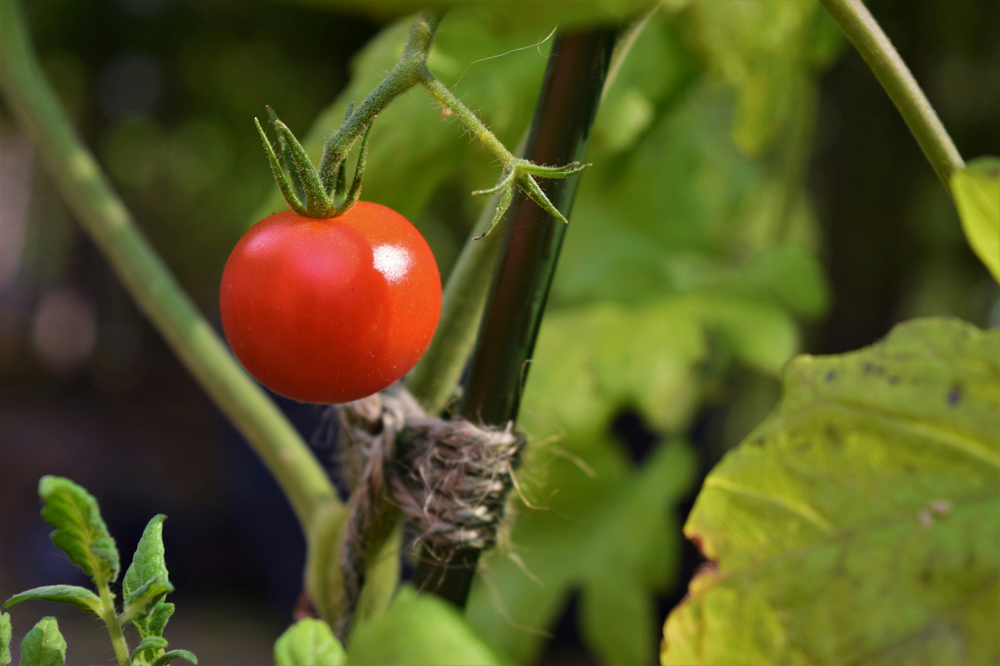
토마토 농장
-
장소와 시기 선택
햇볕 잘 드는 따뜻한 곳이 좋아요.
봄이나 초여름, 서리가 지난 뒤 심는 게 적기입니다.
-
씨앗 또는 모종 준비
씨앗은 실내에서 6~8주 전 미리 싹 틔우기.
모종은 잎이 초록빛 나고 튼튼한 것 선택.
-
토양 준비와 심기
배수 잘 되는 흙 + 유기질 비료 섞기.
약산성(Ph 6.0~6.8) 흙이 좋아요.
씨앗 0.5~1cm, 모종은 뿌리 충분히 덮고 40~60cm 간격 유지.
-
물주기와 지지대
흙 표면 마르면 충분히 물 주기, 과습 주의.
줄기 휘지 않게 지지대 세우기.
-
영양, 병해충, 수확
성장기: 질소 / 열매맺는 시기: 인·칼륨 비료.
병충해 예방 위해 통풍 관리, 필요 시 친환경 농약.
토마토 붉게 익으면 수확, 완전히 익힌 후 먹기.


🍅 토마토 퀴즈
토마토는 과일일까? 채소일까?
- 1. 과일
- 2. 채소
- 3. 둘 다 맞다
토마토는 식물학적으로는 씨가 있는 과일이지만, 요리에서는 채소로 사용되기 때문에 둘 다 맞는 표현입니다.